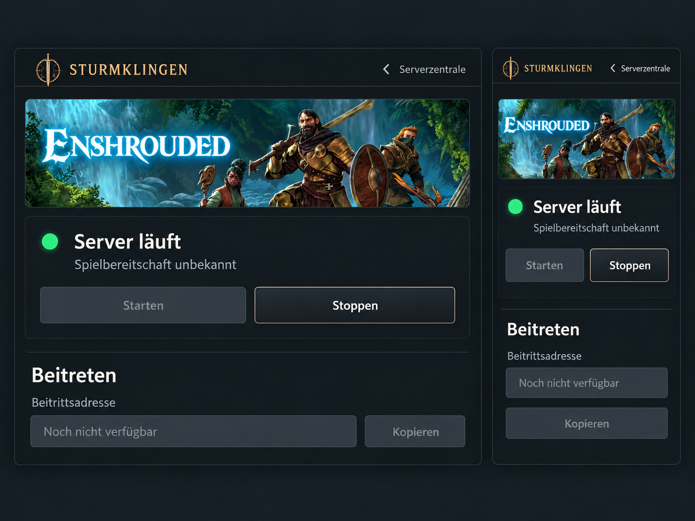
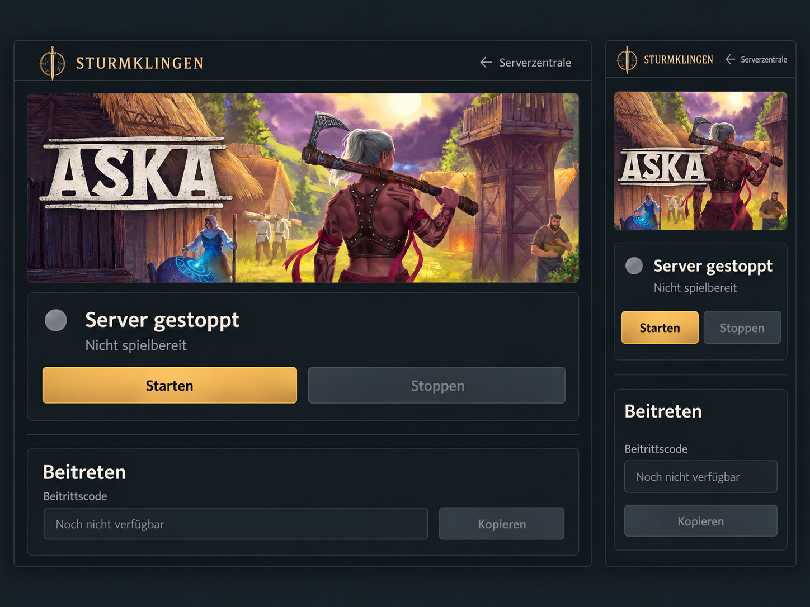
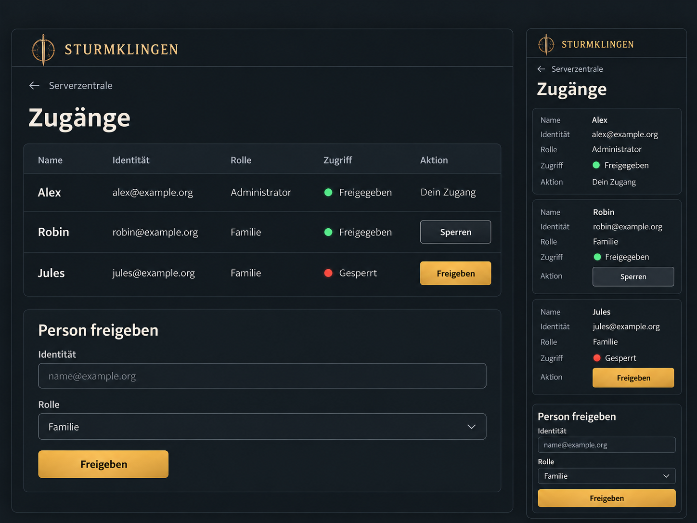
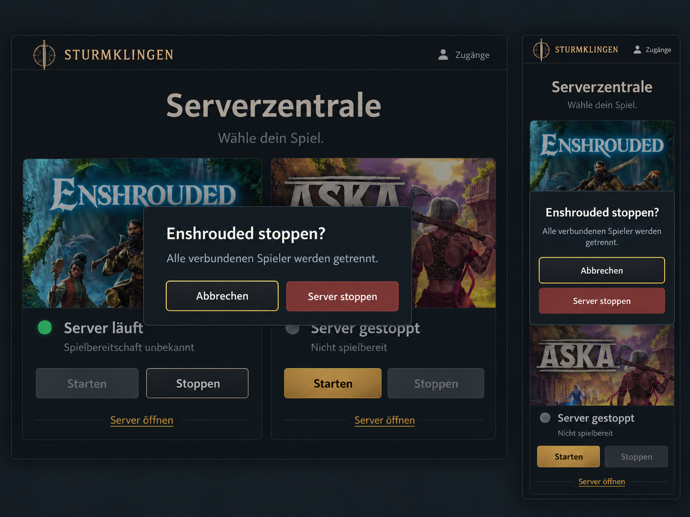
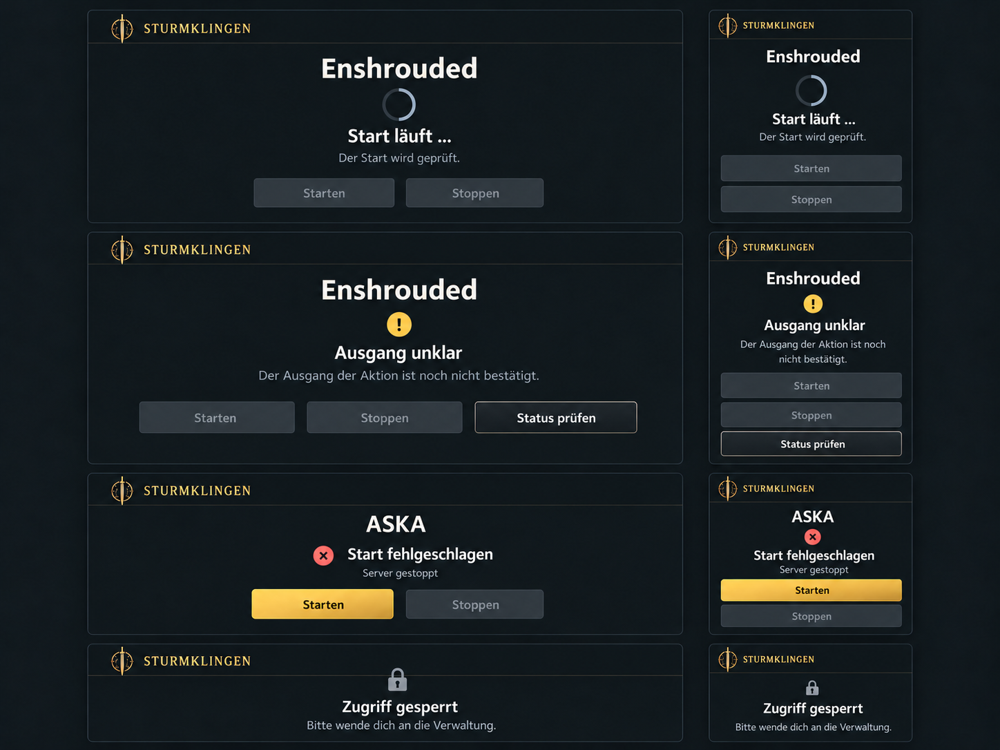
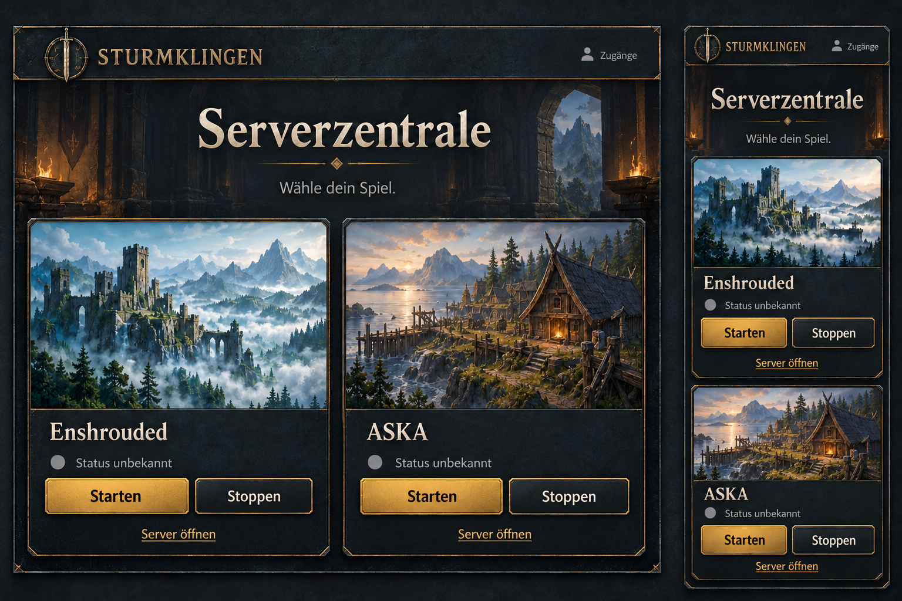

Enshrouded – Serverdetails
Prozess läuft, Spielbereitschaft unbekannt. Starten und Kopieren sind gesperrt.

ASKA – Serverdetails
Server gestoppt. Starten ist verfügbar, Stoppen und Kopieren sind gesperrt.

Zugänge – Verwaltung
Personen freigeben oder sperren; zwei Rollen und ein kleines Formular.

Stoppbestätigung
Bestätigung direkt vom Dashboard. Abbrechen erhält zunächst den Tastaturfokus.

Wichtige Zustände
Laufender Start, unklarer Ausgang, bestätigter Fehlstart und gesperrter Zugang.

Frühere Dashboardfassung zum Vergleich
